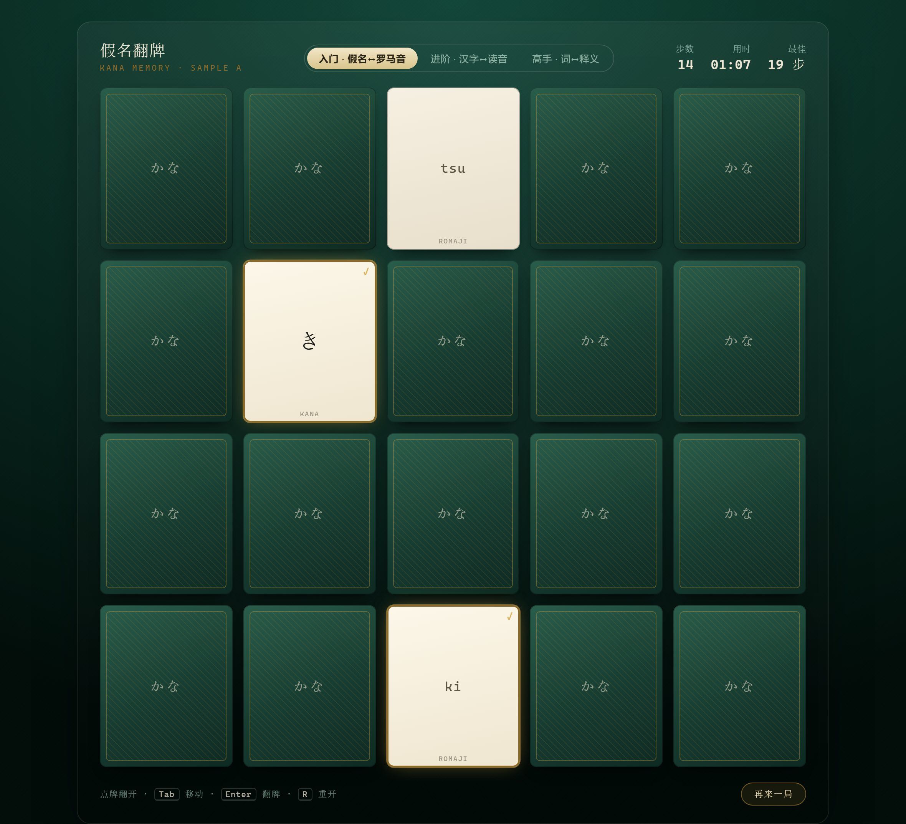
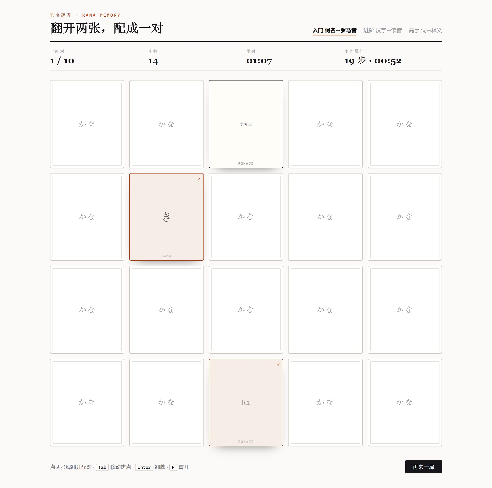
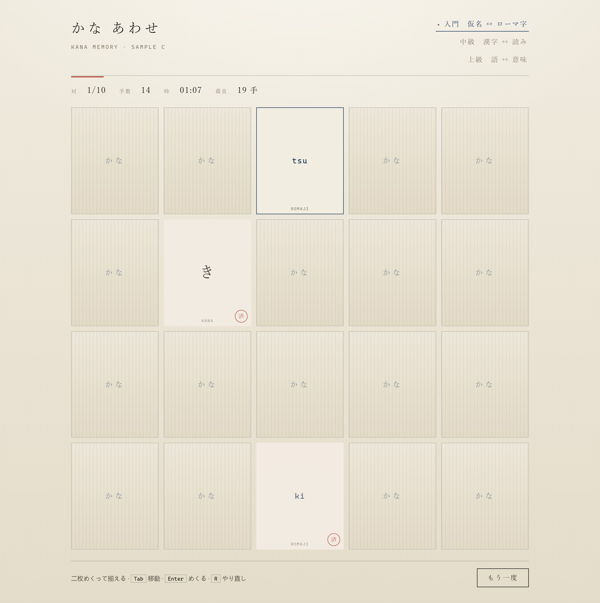
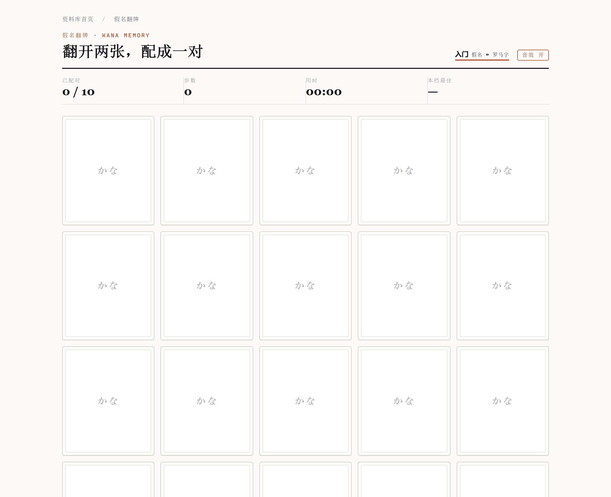
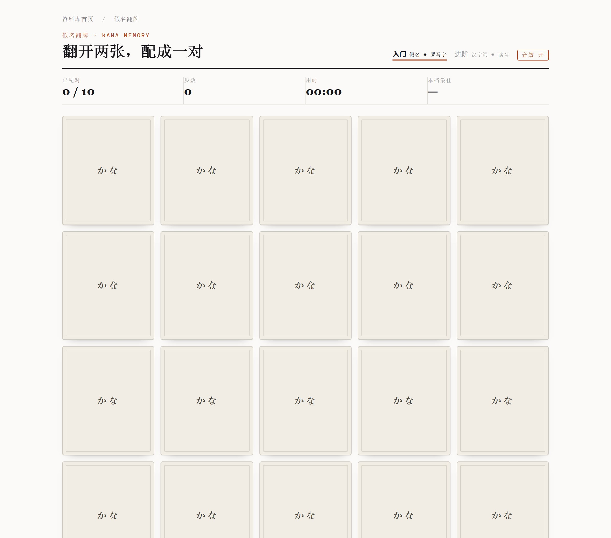
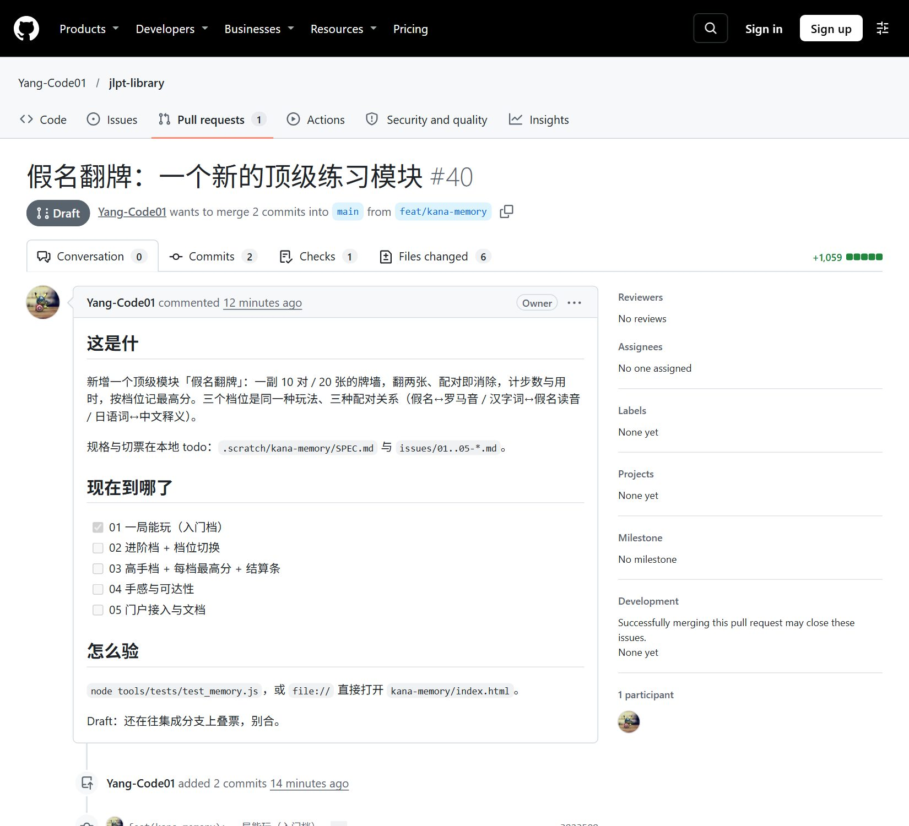

Workflow · 实况记录
把这套 skill 走一遍：
从拷问到复盘的一份实况
Matt Pocock 的 skill 不是十三个独立工具，是一条有先后、有出口的流水线。这篇不解释名词，而是把整条线真跑一遍：在 JLPT 学习站里新开一个「假名翻牌」练习模块，每一步都留下可打开的东西——样张、规格、票、分支、PR、复盘。
八格是同一条线，不是八个工具：每一格的输入都是上一格的产物，除了第 06 格可以随时回去把第 03 格挖深一层。下面按这个顺序走，每格都带一个真产物。
先别动手：问地图，再摸地
ask-matt 路由 · research 后台调研 · 前置 setup-matt-pocock-skills 只装一次
这套 skill 的入口不是「找一个技能」，而是「先认路」。ask-matt 里只有一张表：你现在处在哪一段，该叫谁。它把整条线分成三段——想清楚（grill-with-docs → handoff / prototype）、写成规格再切票（to-spec → to-tickets）、实施与收尾（implement | implement-spec → pr → retro），另有三条岔路（triage / diagnosing-bugs / wayfinder）和一套给「重构老代码」用的健康检查。
做一个 mattpocock skill 的 workflow 的 html。页面分为两部分，左右，左小右大，
左边竖列排列 skill 的介绍和使用场景。一个一个 skill 一个模块。右边是正文。
从头到尾的先以流程为大体框架。主要内容是做一个案例。一步步介绍，
案例里面要有每一步的截图。主要产物。等。
按地图，这句话落在「想清楚」这一段——但有个陷阱：想清楚的前提是知道这块地上已经有什么。这个仓库是静态站，门户、测试、行尾、数据管线都有既成规矩，凭印象改必然踩。所以先派了一个只读的 research 子代理去把「新增一个顶级模块要动哪些地方」查清楚，主线程同时继续访谈。
不是一篇散文，是一串带行号的坐标：门户卡片在哪一行、哪三处断言写死了卡片数、进度模块的白名单为什么不许扩、行尾规则钉在哪个文件。这些坐标后来直接变成了实施阶段的硬约束——子代理拿到的任务书里，每条约束都能追到行号。
index.html:1610-1667 日语组 8 张卡，全部手写；data-tags 必须在词表内 index.html:1593-1599 data-tags 受控词表（全部/资料/词汇/听力/真题/练习/工具） tools/tests/test_area.js:48 写死「12 张卡」 tools/tests/test_reading.js:283 写死「12 张卡」 tools/tests/test_typing_en.js:380 写死「12 张卡」 index.html:1553-1586 左栏 11 个 .rail-item（与 shell.mjs 的 12 个 ITEMS 早已不同步） assets/progress.js:60 RE_UNIT 白名单不含新目录 → 新模块默认不计进度 typing/typing.js:48 独立 localStorage 键先例：jlpt-typing-best
这一步没有产物入库（调研笔记放在仓外的 .scratch/），但它改变了后面所有决定：模块不引共享样式、不接进度模块、不往左栏加条目、三处断言同批改。调研的价值不在结论正确，在于它把「猜」换成了「查过」。
拷问：把「做一个游戏」问成九条不能反悔的决定
grill-with-docs = grilling（拷问）＋ domain-modeling（顺手写 ADR 与术语）
grilling 的规矩很硬：一次只问一个问题，等你答完再问下一个；每问必带「推荐答案 + 理由」；不许把选项写成一大段让人自己挑。它的目标不是收集需求，是把含糊处逼到不能含糊——因为含糊的每一处，后面都会变成返工。
这一轮被问掉的东西，事后看分成三类：
| 类别 | 被问的是什么 | 答完改变了什么 |
|---|---|---|
| 不可逆 | 案例是真的跑一遍，还是编一个？ | 真跑：于是有了真实分支、真实提交、真实 PR，报告里的每个截图都能点开核对 |
| 不可逆 | 新开一个模块，还是塞进现有模块？ | 新开：于是「新增顶级模块」这条最贵的路径被完整走了一遍，包括门户与文档的七处同步 |
| 便宜但影响全篇 | 左栏放几个 skill？ | 十三个模块 + 一张路由表：够覆盖主线，又不至于变成名词表 |
| 便宜但影响全篇 | 截图是真截，还是画示意图？ | 真截：界面用无头浏览器出图，会话过程用终端卡讲真实文本 |
| 口味 | 案例做什么题材？ | 假名翻牌：练的是「配对回忆」，正好补上站里单向练习的空缺 |
九轮之后，谈定的话被写成一张表：每一个决定都带一句「为什么」。这是整条流水线里最便宜、也最省事的产物——后面每个子代理都拿它当输入，没有人再问「为什么不用另一种做法」。
| 决策 | 结论 | | 案例真实性 | 真跑一遍流程，产物真落盘 | | 主构建技能 | implement-spec（implement 作补充说明） | | 牌面与档位 | 三档 = 三种配对：假名↔罗马音 / 汉字词↔读音 / 日语词↔释义 | | 分支与 PR | 从 main 切 feat/kana-memory，draft PR base = main | | 视觉方向 | B · 纸感卡片墙（三张样张对比后用户选定） |
拷问的规矩是「只问决策，事实自己去查」。但第一轮我把「这个仓库的测试是怎么跑起来的」也列成了问题——那是事实，查一下就有，问用户等于把成本转嫁给他。用户当场纠正：事实性问题去查文件、查工具，只把决策留给人。这条纠正后来写进了本地约定，也直接决定了后面每一轮都先派调研再提问。
grill-with-docs 比 grilling 多一件事：问的同时把文档写掉。本案例里落的是三条术语（牌墙 / 一局 / 配对）与一份 ADR——「为什么再开一个顶级模块，而不是塞进现有模块」。写文档不是为了留痕，是为了让下一个会话不必重新论证。
样张：三个能打开的答案，比一段文字描述有用
prototype — 一次性代码，只为回答一个问题
prototype 的第一句话是：问题决定形状。要验数据模型，就写成几行脚本把状态打出来；要验界面，就写一个能点的页面。它的产物是「答案」，代码本身该扔——所以本案例的三个样张都放在仓外的 .scratch/ 里，一个字节都不入库。
要问的问题是「这个游戏该长什么样」。这种问题用文字回答必然错位：说「纸感」三个人会想到三张纸。于是同一副牌、同一条洗牌种子、同一组预置状态（已配对一对、已翻开一张），写成三个方向完全不同的页面，再加一页目录说明各自在回答什么：
- A · 绒布牌桌：深绿felt、奶油牌、金线，翻牌是三维翻转。押的是「像在桌边玩」的沉浸感。
- B · 纸感卡片墙：纸底、细线网格、墨色正文、朱色强调，配对成功给淡朱底＋勾。押的是「和这个站的气质是一家人」。
- C · 和纸双色：和纸底、藍与朱、明朝体、发丝线，配对后盖一枚朱色小印。押的是「日式印刷品」的调子。



用户看着三个能点的页面选了 B。这个选择不只定了配色，还定了一串下游决定：既然走纸感，就不该引站里那套无衬线设计令牌（那会把共享样式表拖成调色板），于是模块自带一份 CSS，走 typing/ 那条「不引共享资源」的老路。一个视觉选择，最后变成了一条架构边界。
一、洗牌写错看不出来。三张样张的洗牌数组只用了 0–9 的重复值去索引 20 张牌，牌墙上于是出现两张「き / ki」——看图时才发现的。修法不是删重复，而是换成带种子的 Fisher–Yates：样张要能复现，靠随机数就复现不了。
二、居中会把证据裁掉。样张 A 用 flex 垂直居中，内容一旦高过视口，顶部那排计量（步数 / 用时 / 最佳）在整页截图里就整体消失。截图工具没错，是布局把信息推出去了——判断一个样张能不能用，先看它在截图里还剩下什么。
规格：把谈定的话压成一份能照着写的文件
to-spec — 不访谈，只综合
to-spec 的第一句就是禁令：不要再问用户，把你已经知道的写成规格。它要的产物不是会议纪要，而是这样一份文件：读完之后，一个没参加过对话的子代理能照着写代码，而且知道哪些事不该做。
写规格前还剩最后一个真决策没落：测试从哪儿进。这不是口味题，它决定了后面所有测试的形态，也决定了这个模块能不能被并行开发。问题是这么问的：
这个模块的算法只有十行（洗牌 + 比 key），风险全在接线：同 id 判定、翻开与配对的互斥、 配错后的定时回翻、计步时机、换档重建牌墙。测试接缝放哪儿？ A. 只测纯逻辑层 —— 快，但上面那些风险一条都测不到 B. DOM 桩驱动真页面脚本 —— 用仓库已有的 VM + 桩路线，慢一点，接线全在射程内 C. 装 jsdom —— 最省事，但要引入外部依赖，破仓库「零依赖」硬约束
选了 B。理由写在规格里，一句话就能服人：「只测纯函数会把五个真风险全漏掉」。这条决定还带出一个副产物：仓库原有的 DOM 桩 classList 是空实现，断不到「已配对」这种状态，于是新套件自带一个把 classList 做真的最小桩——不引依赖，只补缺的那一块。
## Problem Statement 练习都是单向的：敲字只练输出，翻转卡没有对局 ## Solution 10 对 / 20 张的牌墙；三档 = 三种配对关系 ## User Stories 16 条，逐条写「作为谁 / 我想要 / 以便」 ## Implementation Decisions · 模块边界 新目录，走 typing/ 的「不引共享资源」路线 · 数据来源 复用 typing/romaji.js 与 typing/data/*.js，不复制表 · 一局的定义 10 对 20 张、5 列 4 行、步数 = 翻满两张算一步 · 持久化 只两个 localStorage 键；不动 progress.js 的白名单 · 交互与反馈 翻牌/配错/配对三态；结算条；键盘；aria-live · 门户接入 加一张手写卡，不加 rail-item，三处断言 12 → 13 · 架构记录 要 ADR，要术语 ## Testing Decisions 接缝 = DOM 桩；什么算好测试；要测的九件事 ## Out of Scope 七条「不做」，其中两条是别人踩过的坑
十六行 Out of Scope 是这份文件里最容易被跳过、也最值钱的一节。它把「不接进度模块」「不加左栏条目」「不做音频文件」「不改 typing/」逐条写成白纸黑字——后面三个子代理各自独立干活时，谁都可能顺手「改进」其中一条，而这一节给了它们说不的依据。事实上有一次差点破线：进阶档想给牌面小字换个更准的标签，方案里第一反应是「顺手把 CSS 也调一下」，被「票 04 独占 kana.css」和这条边界拦住了。
访谈阶段的施工单里，模块目录写的是 memory/；到规格阶段定稿成 kana-memory/。这种漂移在任何项目里都会发生，危险的是它悄悄分裂：票里写一个名字、测试断言另一个名字、文档再写第三个。定稿的规格把它锁成一个词，后面所有票、分支名、路径、文档行都从这一个词派生。
切票：切成能单独合进去的小刀，而不是按层次切
to-tickets — tracer bullet ＋ 声明的阻塞边
切票最自然的错法是按代码分层切：先做数据层、再做状态层、最后做界面层。这样切的每一刀都看不见东西——数据层写完，页面上什么都没有，没法验证、没法截图、也没法给别人看。to-tickets 要的是另一种切法：每一张票都是一颗能打到目标的子弹，合进去之后立刻能在页面上看见一点新东西。
这个模块被切成五张：
01 一局能玩（入门档） ← 无阻塞，第一颗子弹 │ ├─→ 02 进阶档 + 档位切换 │ │ │ └─→ 03 高手档 + 每档最高分 │ │ │ └─→ 05 门户接入与文档 └─→ 04 手感与可达性（只依赖 01，故可与 02 并行）
看这张图就能看出为什么它值钱：01 一落地，前沿就有两张票（02 和 04），可以同时派两个子代理；03 等 02、05 等 03，串行的那一段只剩两张。并行度不是靠人多，是靠依赖边画得准。
一张票长这样——短、硬、可判：
# 02: 进阶档 汉字词 ↔ 假名读音 + 档位切换
**What to build:** 页面顶部出现三个档位（入门 / 进阶 / 高手），点「进阶」重建牌墙：
牌对改为从 typing/data/{n5,n4}.js 抽的汉字词与其假名读音（如 兄 ↔ あに），步数、用时、
配对数全部归零并从这一刻重新计时。纯假名词（汉字写法与读音相同）不进牌池。
**Blocked by:** 01
**Status:** ready-for-agent
- [ ] 三个档位可切换，当前档位有可见的选中态
- [ ] 切到进阶档后牌池全部来自词表条目，且不含 w === k 的词
- [ ] 换档会重建牌墙（牌数与行列不变）、步数 / 用时 / 配对数归零
- [ ] 换档后计时不继续累加，直到下一次翻牌才重新起跑
- [ ] 当前档位在刷新后仍然保留
- [ ] node tools/tests/test_memory.js 增加换档断言并全绿
四条格式很关键，缺一条子代理就会自己发明：
What to build 写成「合进去之后用户能看见什么」，不写成「改哪些文件」（文件归属另有施工约定）；
Blocked by 只写票号，机器和人都能读，整张图就是从这些行拼出来的；
Status 让「谁能开工」变成查表而不是讨论；
勾选项 全是可判定的行为，没有一条是「代码质量好」这种没法定案的话。
不是「代码分层」也不是「工作量平均」，而是两条：能单独合入，且合入后立刻可验证。按这个判据，01 必须包含「随机抽 10 对、能翻牌、能配对、计步计时」整条纵切——它一张票就穿过了数据、状态、界面三层，但它是唯一一张「能让用户玩起来」的票，所以它第一。
实施：九个步骤把「任务图」变成一堆子代理
implement-spec — 集成分支 ＋ worktree ＋ 前沿并发（内部调 tdd）
到这一步，活儿其实已经不是「写代码」，而是「调度」。implement-spec 的九步里没有一步在讲怎么实现，全在讲怎么让好几个子代理互不碍事：开集成分支、把每张票丢进自己的 worktree、合完一张就重算前沿、全部合完才让评审进场。
3. 建集成分支。若追踪器以 PR 关闭工作，或用户要求，则在第 5 步首次合并后开 draft PR （尚未领先 main 的分支开不了 PR），标记为关闭此规格与这些票。 4. 用 implementer 子代理实现每张票，每票在自己的 worktree、自己的分支上。每个 implementer： · 开工前确认自己的 worktree 基于集成分支，若不是就 reset 到它上面； · 调 Skill 工具跑 tdd 把票建起来； · 报完成之前先把集成分支的 tip 合进自己的分支。 5. 每个 implementer 完成后，用 merger 子代理把它合进集成分支。 6. 若前沿变了，就再派一批 implementer —— 这是并发度的来源。 7. 全部完成后，在集成分支上跑 code-review，把问题交给一个 implementer 一次修完。 8. 若有 draft PR，就把它标成 ready；否则按追踪器的规矩逐张关票。 9. 清理所有 implementer 的 worktree。 沟通要稀疏。主要靠上下文指针：指向规格、票、调研笔记、之前的提交。不要转述已经能查到的东西。
最后那段话是整个流程能跑起来的真正原因。派出去的每个子代理看不到主线程的对话，所以任务书里不是「我们刚才讨论了…」，而是一串路径：读 SPEC.md、读 issues/02-*.md、读施工约定 ARCH.md。主线程花在转述上的 token 越少，能同时带多少个子代理就越多。
5.1第一颗子弹：一张票就让它能玩
票 01 的目标不是「搭好架子」，而是「能玩」：随机抽十对、能翻、能配、计步计时。它在自己的一条分支上完成，提交时新增五个文件：
kana-memory/game.js 110 行 纯逻辑：洗牌 / 开一局 / 翻一张 / 结算 kana-memory/page.js 329 行 接线：建牌 / 绑事件 / 渲染计数 / 档位注册 kana-memory/index.html 58 行 插槽 + 固定脚本顺序 kana-memory/kana.css 131 行 纸感卡片墙（照样张 B） tools/tests/test_memory.js 430 行 116 项断言，DOM 桩驱动真页面 tools/test.mjs 1 行 登记进 SUITES

注意这一版「不完整」得刚刚好：档位只有一个、最高分列显示破折号、结算条是空的、音效按钮点了没反应。但它已经能玩一局，所以它是可以被验证的——这也是为什么切票时要它先落地，而不是先把三个档位写完。
5.2每个 implementer 开工的第一件事：先写会红的测试
implement-spec 让每个 implementer 「调 Skill 工具跑 tdd」，不是为了仪式感，而是为了不让子代理把测试写成「跑得通就行」。tdd 里真正有用的不是红绿循环本身，是它规定的什么算好测试：只断言外部可观察行为，不断言样式、不测动画时长、不测音频波形。
| 风险（真实存在） | 测试怎么捉它 |
|---|---|
| 洗牌写错，牌墙出现两张一模一样的牌 | 断言「一局里每对恰好两张、无重复无遗漏」—— 这条是从样张阶段的真实事情留下的 |
| 配错后不翻回去 | 推进假定时器到 619ms 仍开着，到 620ms 回背面 |
| 同一张牌被点两次计入步数 | 点两次，断言步数不变、状态不变 |
| 换档后旧定时器把新牌局改乱 | 换档后推进旧定时器，断言新牌局不受影响（代际守卫） |
票 01 交上来的时候测试数字是 ✓ 全部通过 (116)，全仓 node tools/test.mjs 是 26 通过 · 0 失败 · 9 跳过 · 2432 项断言。那 9 个跳过不是失败——是需要本地源材料或密钥的套件，在别人克隆的仓库里本来就不该跑。
5.3开二条线：并行写入的边界在哪
票 01 合进集成分支后，前沿变成两张票（02 和 04），于是同时派两个子代理，各自一个 worktree、自己的分支：
library 0253041 [feat/kana-memory] ← 集成分支，只有它往 main 上合 library-wt/01 3823508 [feat/kana-01] ← 已合并，留作对照 library-wt/02 0253041 [feat/kana-02] ← 进阶档 + 档位切换（进行中） library-wt/04 0253041 [feat/kana-04] ← 手感与可达性（并行）
并行的真正约束不是 CPU，是文件归属。两个子代理同时改一行，合并时就只能手工猜。所以派活时先写一张归属表：谁拥有 kana.css、谁拥有 page.js、谁的测试文件只归谁。这张表还提前把冲突点写成了规则——「02 只能往 page.js 加两处，上限 8 行」，而不是「你们小心点」。
5.4两条线撞在一起：冲突的解法不能靠「看哪边新」
票 04 交上来合并时报了两处冲突，都是并行写入的必然产物，不是谁的错：
CONFLICT (content): Merge conflict in kana-memory/index.html CONFLICT (content): Merge conflict in tools/test.mjs kana-memory/index.html 的脚本块： <<< 集成分支（票 02 刚加的） <script src="../typing/data/n5.js"></script> <script src="../typing/data/n4.js"></script> <script src="tiers.js"></script> === 票 04 的分支 <script src="feel.js"></script> >>> feat/kana-04
低级的解法是「两边都留」——那么 feel.js 会排到 tiers.js 前面还是后面，完全取决于编辑器把哪块放在上面。真正的解法在施工约定里：脚本顺序是**契约**，写死成 romaji → game → n5 → n4 → tiers → score → feel → page。合并时按契约重排，而不是按提交时间或代码块位置。
tools/test.mjs 的冲突同理：两边各往 SUITES 里加了一行测试套件，两行都保留、按契约里的顺序排——一行是「进阶档 / 换档」，一行是「手感与可达性」。
这次合并完整跑了一遍三个套件（118 + 80 + 89 项断言）之后才提交。合并提交的职责不是「让 git 不报错」，是让两条线的语义都还在。

かな 从 1.9:1 拉到 7.3:1，牌墙终于像一面墙；同一屏里能看到三档 tab 都出来了。这张图值得和票 01 那张并排看：同一条命令、同一个视口、同一个页面，中间只隔了一次「按截图改」——任务书里附的是那张截图，不是「请提高对比度」这样的形容词。子代理拿到的是可核对的差，改完也能自证改到了。
票 02 开工五分钟就停下来问了三个阻断点，其中一个很典型：施工约定要求它自己的脚本注册到「档位表」，但那个表要到 page.js 末尾才存在，而 boot() 就在后面一行——于是刷新页面时保存的「进阶档」会被回落成「入门档」。它给了三个方案（改两行 / 加一行守卫 / 一行不改但靠内部实现细节），并说明推荐哪个、为什么不推荐第三个。
这是并行开发里最值得期待的场景：子代理不能自己改契约，但必须把冲突升级上来，而且带着方案。最后选了第一个方案——允许它改 page.js 六行，同时由主线程把施工约定回写一份：契约改了，文档必须同批改，否则下一个子代理会拿着旧约定开干。
评审：两个轴，故意不合并
code-review — 标准轴 · 规格轴 · 并行两个子代理
code-review 的全部主张就一句话：一次评审只能回答一个问题。所以它把评审劈成两个轴，各派一个子代理，拿回两份报告，并排放着——不合并、不重新排序、不选出「最重要的一条」。
标准轴 git diff main...HEAD 里的每个 hunk，违反仓库写明的哪条规矩？ 外加一份「坏味道基线」（Fowler 《重构》第 3 章），仓库有文档就以文档为准。 规格轴 同样一份 diff，对照 SPEC：哪些要求漏了 / 只做了一半？ 哪些行为规格根本没要（scope creep）？哪些看着做了但做法是错的？ 代码合乎所有规范，但做错了事 → 标准轴过，规格轴红。 代码完全照规格做，但破坏了项目约定 → 规格轴过，标准轴红。
这个设计要挡住的是**掩盖**：如果一份 diff 的格式问题很明显，一次「什么都看」的评审就会把整篇篇幅花在格式上，规格偏差藏在最后一行；反过来，一个人拿着 SPEC 逐条对账，就会对重复代码和神秘命名视而不见。分开跑，两种漏法都堵住了。
$ git rev-parse main # 固定点必须先解得出 7ff91f6c3c0b2a8eccbf8a1c67a6d1a0b9f2a7d5 $ git log main..HEAD --oneline e245b58 feat(kana-memory): 合并票 04（手感与可达性） 28268ac feat(kana-memory): 合并票 02（进阶档 + 档位切换） 0253041 feat(kana-memory): 合并票 01（一局能玩） 0c1dd7d test(kana-memory): 静态断言只禁 score.js… $ git diff main...HEAD --stat
固定点用**三点** diff（main...HEAD），比较的是 main 与分支的 merge-base，不是 main 的尖端——否则你评审的东西里会混进别人这期间合进 main 的提交。skill 里还有一条前置检查：固定点解不出来、或者 diff 是空的，在这一步就失败，别等到两个并行子代理里才炸。
标准轴要什么，skill 说得很具体：找到仓库里每一份写「代码该怎么写」的文件（CODING_STANDARDS.md、CONTRIBUTING.md 存在就必须在列），再把那份坏味道基线原样贴进子代理的任务书——子代理的上下文是干净的，它看不到你手里的基线。本仓库的清单是四份：CODING_STANDARDS.md、AGENTS.md（架构约束与不变量）、docs/portal-map.md（真源→生成器→校验）、docs/adr/（已决架构，如 ADR-0011 要求新模块同批改四处）。
基线里的每一条都只是带标签的启发式（「可能是 Feature Envy」），永远不是硬违规；而仓库文档里写明的规矩可以是硬的。skill 还给了两条铁律：仓库文档覆盖基线（文档承认的做法，基线就别再挑），工具已经管的事不要报（格式、行尾、Lint 能查出来的，别浪费评审的篇幅）。
交付：PR 正文只回答三个问题
pr — 图说改动 · 前后证据 · 合并风险
pr 这个 skill 只有一段模板和一句劝告：跳过一切前言，只留下能回答问题的部分。模板三段，各有各的读者：Summary 给想知道「改了什么形状」的人，Evidence 给不信「能跑」的人，Merge Danger 给要按合并键的人。
## Summary <diagram, diff-sketch, or tree> ## Evidence - **Before:** <screenshot/output/failing test run> **After:** <screenshot/output/passing test run> ## Merge Danger **Door:** <one-way or two-way> **Blast Radius:** <one-word description>
三段里最容易被写坏的是第一段。Summary 不是「改了哪些文件」的清单，而是一张能让人一眼看懂形状的图：改逻辑就给伪代码，改控制流就给调用树，改文件归属就给浅树，改界面就给组件树或 diff。本案例的改动正好是「多了一整块目录 + 一行脚本顺序」，所以用树 + 一段状态机伪代码，比三段文字都清楚。
第三段是最少人写、最该写的一段。「单向门还是双向门」这个问题逼你想一件事：合下去之后好不好退。新目录 + 一张门户卡 + 四处断言数字，一个 revert 就回去了，是双向门；但「三处断言与新卡是同批改的」这条要写出来——只回退一半，门户测试会红。
implement-spec 第 3 步说得很具体：首次合并之后再开 draft PR——因为一个还没领先 main 的分支连 PR 都开不出来。这条不是形式主义：有了 PR，后面每合一张票，评审者看到的是一个在长的东西，而不是最后一坨。
$ git push -u origin feat/kana-memory * [new branch] feat/kana-memory -> feat/kana-memory $ HTTPS_PROXY=$PROXY gh pr create --draft --base main --head feat/kana-memory --title "假名翻牌：一个新的顶级练习模块" --body-file .scratch/kana-memory/pr-draft.md https://github.com/Yang-Code01/jlpt-library/pull/40
PR 正文的定稿不在这时候写。draft 阶段它只需要两件事：说清这是什么、勾出票的进度——让人知道现在看它有没有意义。真正的正文留到 code-review 之后，用 pr 的模板重写一遍，然后 gh pr edit 覆盖上去。

这套流水线里，有三种活不该走主线
triage · diagnosing-bugs · wayfinder · improve-codebase-architecture
主线的假设是「你知道要做什么，只是还没想清怎么做」。有三类活不满足这个假设，硬套主线会得到一份规格性很强的错误答案。
| 什么时候叫它 | skill | 它做完之后你手上多出什么 |
|---|---|---|
| 别人（或未来的自己）塞给你一堆 issue / 外部 PR，乱七八糟没分诊 | triage | 每一条都被分成「需补充 / 可交给 agent / 需人工 / 不做」，可交给 agent 的那些还附了一份能直接开工的简报 |
| 它不是「要加什么」，而是「坏了」——报错、慢、偶发 | diagnosing-bugs | 一条能复现的证据链和最小修法，而不是一圈猜测式改动 |
| 你连「下一步该往哪走」都不知道，方向比方案更缺 | wayfinder | 一张把可能性摊开的地图，以及一条便宜的验证路径 |
| 没有新需求，但你感觉这块代码越来越难改 | improve-codebase-architecture | 按「深模块」重新划一遍边界，给出一批可独立合入的加深手术 |
本案例一条都没走：需求是新的、没有故障、方向从一开始就明确（新开一个练习模块）、模块本身是新建的（没有历史包袱可体检）。不用某个 skill 不是缺失，是因为它解决的问题这次不存在。左栏把 handoff 也留在这里，理由相同——这一整轮从访谈做到复盘都在同一个会话里，没有需要交接给下一个会话的断层。
如果一个会话做不完（上下文要满了），或者要换人接手，就必须把「已经谈定的决定 + 现在做到哪 + 下一步的入口」压成一份文件。它的写法与本篇的流水线一致：指针多于复述——写「规格在哪个文件、第几张票没做完、分支叫什么」，而不是把规格抄一遍。